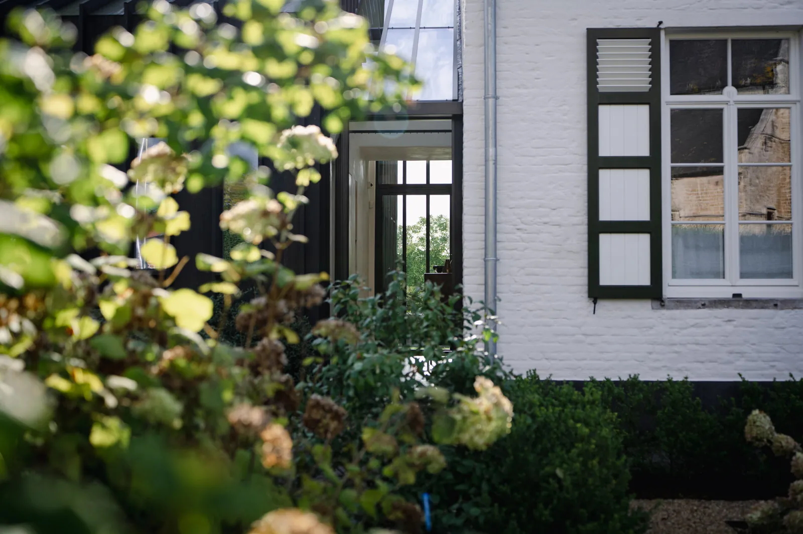
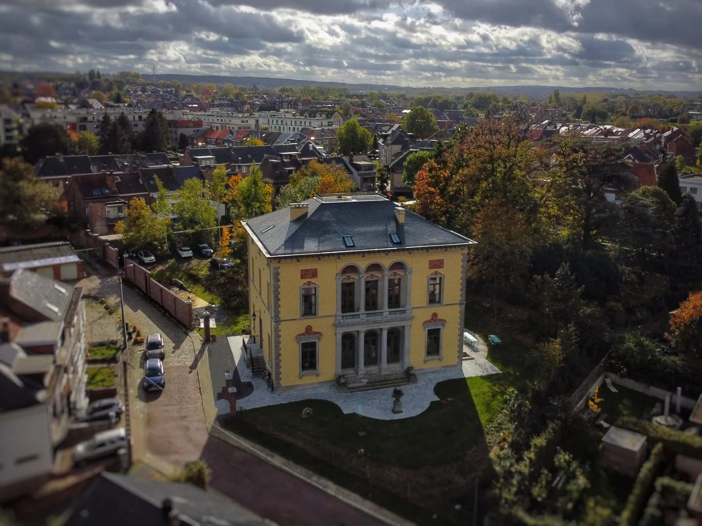
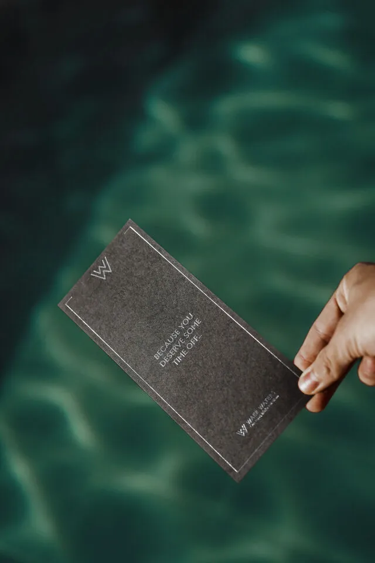
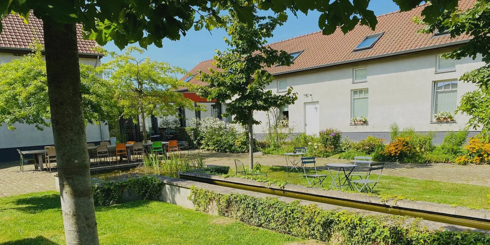
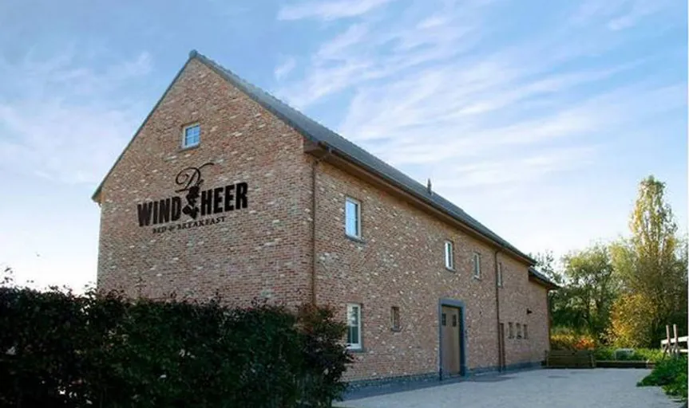
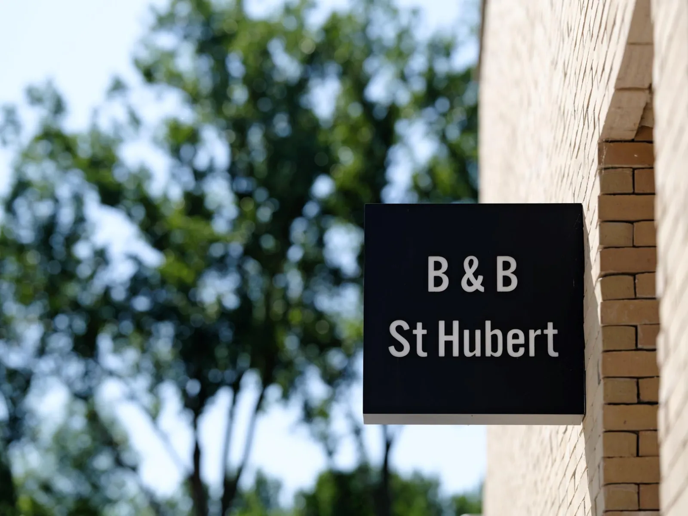
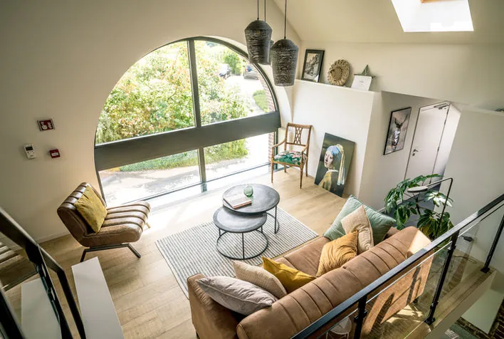
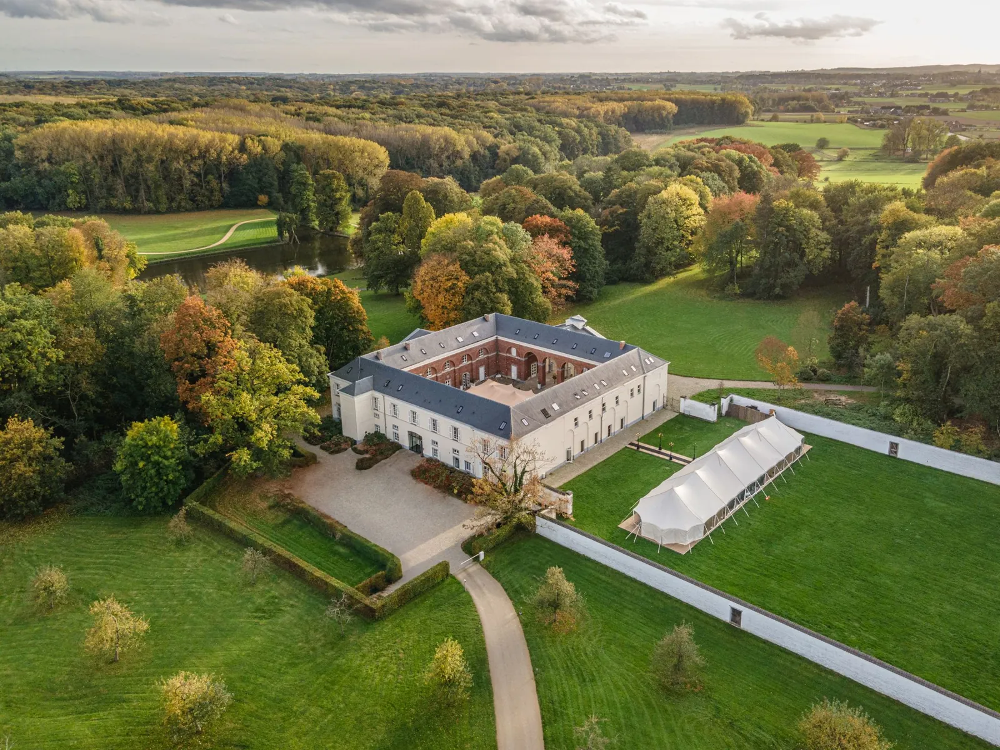

<style>
  :root {
    --paper:   #f5efe5;
    --paper-2: #ece4d4;
    --ink:     #1a1a1a;
    --ink-2:   #3a3530;
    --muted:   #6d655c;
    --rule:    #c8bba6;
    --forest:  #1f3a30;
    --forest-2:#2c5142;
    --rust:    #8a3a1f;
    --gold:    #b8893a;
    --cream:   #fbf7ee;
  }

  .catalog {
    background: var(--paper);
    color: var(--ink);
    font-family: 'Inter', -apple-system, BlinkMacSystemFont, sans-serif;
    line-height: 1.55;
    font-size: 15px;
    padding: 0;
    margin: 0;
  }

  .catalog .display, .catalog h1, .catalog h2, .catalog .serif {
    font-family: 'Cormorant Garamond', 'Playfair Display', Georgia, serif;
    font-weight: 500;
    letter-spacing: -0.01em;
  }

  .catalog .eyebrow {
    font-family: 'Inter', sans-serif;
    text-transform: uppercase;
    letter-spacing: 0.22em;
    font-size: 10.5px;
    font-weight: 600;
    color: var(--muted);
  }

  /* ===== Masthead ===== */
  .masthead {
    border-bottom: 1px solid var(--rule);
    padding: 28px 48px 22px;
    display: flex;
    align-items: baseline;
    justify-content: space-between;
    gap: 32px;
    flex-wrap: wrap;
  }
  .masthead .logo {
    font-family: 'Cormorant Garamond', serif;
    font-size: 26px;
    font-weight: 600;
    letter-spacing: -0.01em;
  }
  .masthead .logo .amp { color: var(--rust); font-style: italic; }
  .masthead .issue {
    font-family: 'Inter', sans-serif;
    font-size: 10.5px;
    text-transform: uppercase;
    letter-spacing: 0.22em;
    color: var(--muted);
  }

  /* ===== Cover spread ===== */
  .cover {
    display: grid;
    grid-template-columns: 1.05fr 1fr;
    gap: 0;
    border-bottom: 1px solid var(--rule);
  }
  .cover .copy {
    padding: 56px 48px 48px;
    display: flex;
    flex-direction: column;
    justify-content: space-between;
    gap: 24px;
  }
  .cover h1 {
    font-size: 76px;
    line-height: 0.96;
    margin: 16px 0 18px;
    font-weight: 500;
    color: var(--ink);
  }
  .cover h1 em { color: var(--rust); font-style: italic; font-weight: 500; }
  .cover .dek {
    font-family: 'Cormorant Garamond', serif;
    font-size: 22px;
    line-height: 1.45;
    color: var(--ink-2);
    max-width: 36ch;
  }
  .cover .meta-row {
    display: flex;
    gap: 28px;
    flex-wrap: wrap;
    padding-top: 18px;
    border-top: 1px solid var(--rule);
    font-size: 12px;
    color: var(--muted);
  }
  .cover .meta-row strong { color: var(--ink); font-weight: 600; }

  .cover .anchor {
    position: relative;
    background: #20211c;
    overflow: hidden;
    min-height: 460px;
  }
  .cover .anchor img {
    width: 100%; height: 100%;
    object-fit: cover;
    display: block;
    filter: saturate(1.05);
  }
  .cover .anchor .star {
    position: absolute;
    top: 24px; right: 24px;
    background: var(--paper);
    color: var(--rust);
    font-family: 'Cormorant Garamond', serif;
    font-style: italic;
    font-size: 18px;
    padding: 8px 16px;
    border-radius: 999px;
    box-shadow: 0 8px 22px rgba(0,0,0,0.18);
  }
  .cover .anchor .anchor-card {
    position: absolute;
    left: 24px; right: 24px; bottom: 24px;
    background: rgba(245,239,229,0.96);
    padding: 18px 22px;
    border-left: 3px solid var(--rust);
  }
  .cover .anchor .anchor-card .eyebrow { color: var(--rust); }
  .cover .anchor .anchor-card .ttl {
    font-family: 'Cormorant Garamond', serif;
    font-size: 26px;
    line-height: 1.1;
    margin: 4px 0 6px;
  }
  .cover .anchor .anchor-card .addr {
    font-size: 13px; color: var(--muted);
  }
  .cover .anchor .anchor-card a { color: inherit; text-decoration: none; }
  .cover .anchor .anchor-card a:hover { color: var(--rust); }

  /* ===== Verdict trio ===== */
  .verdict {
    background: var(--cream);
    border-bottom: 1px solid var(--rule);
    padding: 36px 48px 40px;
  }
  .verdict .eyebrow { display: block; margin-bottom: 14px; }
  .verdict .row {
    display: grid;
    grid-template-columns: repeat(3, 1fr);
    gap: 28px;
  }
  .verdict .v-card {
    padding: 22px 24px;
    background: var(--paper);
    border-top: 4px solid var(--forest);
    position: relative;
  }
  .verdict .v-card:nth-child(2) { border-top-color: var(--gold); }
  .verdict .v-card:nth-child(3) { border-top-color: var(--rust); }
  .verdict .v-card .label {
    font-family: 'Inter', sans-serif;
    text-transform: uppercase;
    letter-spacing: 0.15em;
    font-size: 10.5px;
    color: var(--muted);
    margin-bottom: 8px;
  }
  .verdict .v-card .pick {
    font-family: 'Cormorant Garamond', serif;
    font-size: 30px;
    line-height: 1.05;
    color: var(--ink);
    margin-bottom: 8px;
  }
  .verdict .v-card .pick a { color: inherit; text-decoration: none; border-bottom: 1px solid var(--rule); }
  .verdict .v-card .pick a:hover { border-bottom-color: var(--rust); color: var(--rust); }
  .verdict .v-card .reason {
    font-size: 13.5px;
    color: var(--ink-2);
    line-height: 1.5;
  }
  .verdict .v-card .warn {
    display: inline-block;
    margin-top: 8px;
    font-size: 11px;
    color: var(--rust);
    text-transform: uppercase;
    letter-spacing: 0.12em;
  }
  .verdict .v-card sup a { color: var(--muted); }

  /* ===== Featured spread (Villa Servais) ===== */
  .feature {
    display: grid;
    grid-template-columns: 1.1fr 1fr;
    gap: 0;
    border-bottom: 1px solid var(--rule);
    background: #f0e9dc;
  }
  .feature .photo {
    position: relative;
    min-height: 520px;
    overflow: hidden;
    background: #2a2620;
  }
  .feature .photo img {
    width: 100%; height: 100%;
    object-fit: cover;
    display: block;
  }
  .feature .photo .chip {
    position: absolute;
    top: 20px; left: 20px;
    background: var(--ink);
    color: var(--paper);
    font-family: 'Inter', sans-serif;
    text-transform: uppercase;
    letter-spacing: 0.18em;
    font-size: 10.5px;
    font-weight: 600;
    padding: 7px 12px;
  }
  .feature .photo .caption {
    position: absolute;
    bottom: 16px; right: 18px;
    color: rgba(245,239,229,0.85);
    font-family: 'Cormorant Garamond', serif;
    font-style: italic;
    font-size: 12.5px;
    text-shadow: 0 1px 2px rgba(0,0,0,0.4);
  }

  .feature .copy {
    padding: 56px 56px 52px;
    display: flex;
    flex-direction: column;
    justify-content: center;
    gap: 16px;
  }
  .feature .copy .eyebrow { color: var(--rust); margin-bottom: 6px; }
  .feature .copy h2 {
    font-size: 56px;
    line-height: 0.98;
    margin: 0 0 6px;
    font-weight: 500;
  }
  .feature .copy h2 a { color: inherit; text-decoration: none; }
  .feature .copy h2 a:hover { color: var(--rust); }
  .feature .copy .sub {
    font-family: 'Cormorant Garamond', serif;
    font-size: 22px;
    color: var(--ink-2);
    font-style: italic;
    margin-bottom: 10px;
  }
  .feature .copy p {
    font-size: 14.5px;
    line-height: 1.65;
    color: var(--ink-2);
    margin: 0 0 6px;
  }
  .feature .copy sup a { color: var(--muted); text-decoration: none; }
  .feature .copy .specs {
    display: grid;
    grid-template-columns: repeat(4, auto);
    gap: 28px;
    padding-top: 18px;
    border-top: 1px solid var(--rule);
    margin-top: 14px;
  }
  .feature .copy .specs .s {
    display: flex; flex-direction: column;
  }
  .feature .copy .specs .s .k {
    font-family: 'Inter', sans-serif;
    text-transform: uppercase;
    letter-spacing: 0.16em;
    font-size: 9.5px;
    color: var(--muted);
  }
  .feature .copy .specs .s .v {
    font-family: 'Cormorant Garamond', serif;
    font-size: 24px;
    color: var(--ink);
    margin-top: 2px;
  }

  /* ===== Catalog grid ===== */
  .section-head {
    padding: 56px 48px 14px;
    display: flex;
    align-items: baseline;
    justify-content: space-between;
    gap: 24px;
    border-bottom: 1px solid var(--rule);
  }
  .section-head h3 {
    font-family: 'Cormorant Garamond', serif;
    font-size: 44px;
    line-height: 1;
    margin: 0;
    font-weight: 500;
  }
  .section-head h3 em { color: var(--rust); font-style: italic; }
  .section-head .lede {
    font-family: 'Cormorant Garamond', serif;
    font-style: italic;
    font-size: 18px;
    color: var(--muted);
    max-width: 42ch;
  }

  .grid {
    padding: 32px 48px 56px;
    display: grid;
    grid-template-columns: repeat(2, 1fr);
    gap: 36px 32px;
  }
  .stay {
    display: grid;
    grid-template-rows: auto auto 1fr;
  }
  .stay .photo {
    position: relative;
    aspect-ratio: 4 / 3;
    overflow: hidden;
    background: #2a2620;
  }
  .stay .photo img {
    width: 100%; height: 100%;
    object-fit: cover;
    display: block;
    transition: transform 0.35s ease;
  }
  .stay:hover .photo img { transform: scale(1.025); }

  /* Gradient placeholder for missing photo (B&B Bodegem) */
  .stay .photo.placeholder {
    background:
      linear-gradient(135deg, #6f5640 0%, #3b2d22 70%);
    display: flex;
    align-items: center;
    justify-content: center;
    color: rgba(245,239,229,0.55);
    font-family: 'Cormorant Garamond', serif;
    font-style: italic;
    font-size: 19px;
    text-align: center;
    padding: 24px;
  }

  .stay .photo .km-chip {
    position: absolute;
    top: 12px; left: 12px;
    background: var(--paper);
    color: var(--ink);
    font-family: 'Inter', sans-serif;
    text-transform: uppercase;
    letter-spacing: 0.16em;
    font-size: 10.5px;
    font-weight: 700;
    padding: 6px 10px;
    border-radius: 2px;
  }
  .stay .photo .price-chip {
    position: absolute;
    top: 12px; right: 12px;
    background: var(--ink);
    color: var(--paper);
    font-family: 'Cormorant Garamond', serif;
    font-style: italic;
    font-size: 15px;
    padding: 4px 11px;
    border-radius: 999px;
  }
  .stay .photo .warn-chip {
    position: absolute;
    bottom: 12px; left: 12px;
    background: var(--rust);
    color: var(--paper);
    font-family: 'Inter', sans-serif;
    text-transform: uppercase;
    letter-spacing: 0.16em;
    font-size: 9.5px;
    font-weight: 700;
    padding: 5px 10px;
  }

  .stay .ttl {
    margin: 14px 0 4px;
    font-family: 'Cormorant Garamond', serif;
    font-size: 26px;
    line-height: 1.1;
    font-weight: 500;
  }
  .stay .ttl a { color: var(--ink); text-decoration: none; }
  .stay .ttl a:hover { color: var(--rust); }
  .stay .meta {
    font-family: 'Inter', sans-serif;
    font-size: 11px;
    color: var(--muted);
    text-transform: uppercase;
    letter-spacing: 0.14em;
    margin-bottom: 8px;
    display: flex;
    gap: 12px;
    flex-wrap: wrap;
  }
  .stay .meta .dot { color: var(--rule); }
  .stay .why {
    font-size: 14px;
    line-height: 1.55;
    color: var(--ink-2);
    margin: 0 0 6px;
  }
  .stay .why sup a { color: var(--muted); text-decoration: none; }

  /* ===== Pull quote ===== */
  .pull {
    background: var(--forest);
    color: var(--cream);
    padding: 64px 48px 60px;
    text-align: center;
    border-top: 1px solid var(--rule);
    border-bottom: 1px solid var(--rule);
  }
  .pull blockquote {
    font-family: 'Cormorant Garamond', serif;
    font-style: italic;
    font-size: 38px;
    line-height: 1.18;
    margin: 0 auto;
    max-width: 28ch;
    font-weight: 400;
  }
  .pull blockquote::before { content: "\201C"; color: var(--gold); margin-right: 4px; }
  .pull blockquote::after  { content: "\201D"; color: var(--gold); margin-left: 4px; }
  .pull cite {
    display: block;
    margin-top: 22px;
    font-family: 'Inter', sans-serif;
    text-transform: uppercase;
    letter-spacing: 0.22em;
    font-size: 10.5px;
    color: rgba(251,247,238,0.65);
    font-style: normal;
  }
  .pull cite a { color: inherit; text-decoration: underline; text-decoration-color: rgba(184,137,58,0.4); }

  /* ===== Fine print / booking notes ===== */
  .notes {
    padding: 48px 48px 44px;
    display: grid;
    grid-template-columns: 1fr 1fr 1fr;
    gap: 32px;
    background: var(--paper);
    border-bottom: 1px solid var(--rule);
  }
  .notes .n .lbl {
    font-family: 'Inter', sans-serif;
    text-transform: uppercase;
    letter-spacing: 0.22em;
    font-size: 10.5px;
    color: var(--rust);
    font-weight: 600;
    margin-bottom: 8px;
  }
  .notes .n .body {
    font-family: 'Cormorant Garamond', serif;
    font-size: 18px;
    line-height: 1.45;
    color: var(--ink-2);
  }
  .notes .n .body a { color: inherit; }

  /* ===== Sibling rail ===== */
  .also {
    padding: 40px 48px 48px;
    background: var(--cream);
  }
  .also .eyebrow { display: block; margin-bottom: 16px; }
  .also .sibs {
    display: grid;
    grid-template-columns: repeat(3, 1fr);
    gap: 18px;
  }
  .also .sib {
    background: var(--paper);
    border: 1px solid var(--rule);
    padding: 18px 18px 16px;
    text-decoration: none;
    color: var(--ink);
    display: flex; flex-direction: column; gap: 6px;
  }
  .also .sib:hover { border-color: var(--ink); }
  .also .sib .depth {
    font-family: 'Inter', sans-serif;
    text-transform: uppercase;
    letter-spacing: 0.18em;
    font-size: 9.5px;
    color: var(--muted);
  }
  .also .sib .t {
    font-family: 'Cormorant Garamond', serif;
    font-size: 21px;
    line-height: 1.15;
  }
  .also .sib .s {
    font-size: 13px;
    color: var(--ink-2);
    line-height: 1.45;
  }

  /* ===== Colophon ===== */
  .colophon {
    padding: 22px 48px 32px;
    font-family: 'Inter', sans-serif;
    font-size: 10.5px;
    text-transform: uppercase;
    letter-spacing: 0.18em;
    color: var(--muted);
    display: flex;
    justify-content: space-between;
    gap: 24px;
    flex-wrap: wrap;
  }

  @media (max-width: 880px) {
    .cover, .feature { grid-template-columns: 1fr; }
    .verdict .row, .grid, .notes, .also .sibs { grid-template-columns: 1fr; }
    .cover h1 { font-size: 54px; }
    .feature .copy h2 { font-size: 40px; }
    .pull blockquote { font-size: 28px; }
    .feature .copy .specs { grid-template-columns: repeat(2, 1fr); }
    .masthead, .cover .copy, .verdict, .feature .copy, .section-head, .grid, .notes, .also, .colophon {
      padding-left: 24px; padding-right: 24px;
    }
  }
</style>

<link href="https://fonts.googleapis.com/css2?family=Cormorant+Garamond:ital,wght@0,400;0,500;0,600;1,400;1,500&family=Inter:wght@400;500;600;700&display=swap" rel="stylesheet">

<article class="catalog">

  <header class="masthead">
    <div class="logo">The Agnes Catalogue <span class="amp">·</span> Lodging</div>
    <div class="issue">Vlaams-Brabant · Issue 01 · Spring 2026</div>
  </header>

  <!-- Cover spread -->
  <section class="cover">
    <div class="copy">
      <span class="eyebrow">Survey · Nine Stays Within Taxi Range</span>
      <h1>Where to <em>sleep</em>,<br>after <em>Agnes</em>.</h1>
      <div class="dek">
        Eight character beds — and one walk-back — within a comfortable post-dinner ride home from the village of Sint-Martens-Bodegem. Curated for the night you've already booked the tasting menu.
      </div>
      <div class="meta-row">
        <span><strong>Radius</strong>  ≤ 20 km · ≤ 25 min</span>
        <span><strong>Anchor</strong>  Agnes, 1★ Michelin</span>
        <span><strong>Night taxi</strong>  ~€2/km · ~€45 each way</span>
      </div>
    </div>
    <div class="anchor">
      
      <div class="star">★ Michelin 2026</div>
      <div class="anchor-card">
        <div class="eyebrow">The anchor</div>
        <div class="ttl"><a href="https://agnes.restaurant/en/">Agnes by Thomas Locus</a></div>
        <div class="addr">Processiestraat 3, 1700 Sint-Martens-Bodegem · former presbytery, modern French, €€€ <sup><a href="https://guide.michelin.com/us/en/vlaams-brabant/sint-martens-bodegem/restaurant/agnes-1207215">[1]</a></sup> <sup><a href="https://www.gaultmillau.be/en/restaurants/agnes-dilbeek-sint-martens-bodegem">[21]</a></sup></div>
      </div>
    </div>
  </section>

  <!-- Verdict trio -->
  <section class="verdict">
    <span class="eyebrow">The Decision in Thirty Seconds</span>
    <div class="row">
      <div class="v-card">
        <div class="label">If you want to walk back</div>
        <div class="pick"><a href="https://www.bbbodegem.be/">B&amp;B Bodegem</a></div>
        <div class="reason">Same village as Agnes. Wellness B&amp;B with indoor pool and sauna — <em>but</em> recent reviews flag cleanliness. Inspect on arrival. <sup><a href="https://www.tripadvisor.com/Hotel_Review-g6735910-d11461249-Reviews-B_B_Bodegem-Sint_Martens_Bodegem_Flemish_Brabant_Province.html">[4]</a></sup></div>
        <span class="warn">⚠ Mixed reviews</span>
      </div>
      <div class="v-card">
        <div class="label">If you want hotel-grade wellness</div>
        <div class="pick"><a href="https://www.waerwaters.com/en/hotel-eng">Waer Waters</a></div>
        <div class="reason">4★ adults-only spa hotel, ~6 km away in Groot-Bijgaarden. Six pools, 12,000 m² wellness garden, 27 rooms with heated floors. Book ahead. <sup><a href="https://www.waerwaters.com/en/hotel-eng">[7]</a></sup></div>
      </div>
      <div class="v-card">
        <div class="label">If you want the "wow" backdrop</div>
        <div class="pick"><a href="https://www.villaservais.be/?lang=en">Villa Servais</a></div>
        <div class="reason">Restored 19th-century neo-Palladian villa, 17 km away in Halle. 200 m from a train station that puts Brussels 15 minutes away on Sunday morning. <sup><a href="https://www.villaservais.be/?lang=en">[9]</a></sup></div>
      </div>
    </div>
  </section>

  <!-- Featured spread: Villa Servais -->
  <section class="feature">
    <div class="photo">
      
      <span class="chip">Featured · ~17 km</span>
      <div class="caption">Halle · neo-Palladian, 1847</div>
    </div>
    <div class="copy">
      <span class="eyebrow">The Catalogue's Cover Star</span>
      <h2><a href="https://www.villaservais.be/?lang=en">Villa Servais</a></h2>
      <div class="sub">A cellist's villa, restored room by room.</div>
      <p>Servaislaan 8, Halle. Designed in 1847 by Jean-Pierre Cluysenaar for the Belgian cellist Adrien François Servais, with façade bas-reliefs carved in 1864 by Cyprien Godebski. <sup><a href="https://www.visithalle.be/en/villa-servais">[10]</a></sup></p>
      <p>The villa stood empty from 1981 until <a href="https://www.villaservais.be/?lang=en">Maud and Geert de Poorter</a> acquired it in 2016 and restored each of its eight rooms by hand. The first-floor Ernest Van Dijck library looks out over Halle Basilica. <sup><a href="https://brusselsmorning.com/villa-servais-geert-de-poorter-revives-19th-century-cellists-legacy-in-halle/60884/">[11]</a></sup> <sup><a href="https://www.villaservais.be/?lang=en">[9]</a></sup></p>
      <div class="specs">
        <div class="s"><span class="k">From</span><span class="v">€160</span></div>
        <div class="s"><span class="k">Rooms</span><span class="v">8</span></div>
        <div class="s"><span class="k">To Agnes</span><span class="v">~17 km</span></div>
        <div class="s"><span class="k">Train</span><span class="v">200 m</span></div>
      </div>
    </div>
  </section>

  <!-- Catalog header -->
  <header class="section-head">
    <h3>The <em>Catalogue</em></h3>
    <div class="lede">Eight stays, ordered roughly by distance from the table. Each one earns its place on a different axis — pool, horses, castle wall, farmhouse beams, a four-poster.</div>
  </header>

  <section class="grid">

    <!-- B&B Bodegem -->
    <article class="stay">
      <div class="photo placeholder">
        Adults-only wellness B&amp;B<br><span style="opacity:.7;">Bruine-Lieveheerstraat 7</span>
        <span class="km-chip">~1 km · walk</span>
        <span class="price-chip">~€115</span>
        <span class="warn-chip">⚠ 2.6 / 5</span>
      </div>
      <h4 class="ttl"><a href="https://www.bbbodegem.be/">B&amp;B Bodegem</a></h4>
      <div class="meta"><span>Sint-Martens-Bodegem</span><span class="dot">·</span><span>3 rooms</span><span class="dot">·</span><span>Adults only</span></div>
      <p class="why">The only walk-back option in the catalogue. Indoor pool, sauna, hot tub; brands itself as a wellness B&amp;B. <sup><a href="http://wellness.bbbodegem.be/">[6]</a></sup> The catch: TripAdvisor sits at 2.6/5 with cleanliness complaints, while Bedandbreakfast.eu shows a milder 7.9/10 — pick only if walking home from Agnes outweighs the review risk. <sup><a href="https://www.tripadvisor.com/Hotel_Review-g6735910-d11461249-Reviews-B_B_Bodegem-Sint_Martens_Bodegem_Flemish_Brabant_Province.html">[4]</a></sup> <sup><a href="https://www.bedandbreakfast.eu/en/a/HU7rJcF5JlBU/bb-bodegem">[5]</a></sup></p>
    </article>

    <!-- Waer Waters -->
    <article class="stay">
      <div class="photo">
        
        <span class="km-chip">~6 km</span>
        <span class="price-chip">€€€</span>
      </div>
      <h4 class="ttl"><a href="https://www.waerwaters.com/en/hotel-eng">Waer Waters spa Hotel</a></h4>
      <div class="meta"><span>Groot-Bijgaarden</span><span class="dot">·</span><span>27 rooms</span><span class="dot">·</span><span>21+ only</span></div>
      <p class="why">The strongest pure-hotel option in taxi range. 4★, adults-only (21+), 12,000 m² wellness garden, six pools, two restaurants, heated-floor rooms. ~10 min by taxi after dinner — walk-ins routinely turned away at peak. <sup><a href="https://www.waerwaters.com/en/hotel-eng">[7]</a></sup> <sup><a href="https://www.expedia.ie/Dilbeek-Hotels-Waer-Waters-Spa-Hotel.h46279590.Hotel-Information">[8]</a></sup></p>
    </article>

    <!-- Trionfo -->
    <article class="stay">
      <div class="photo">
        
        <span class="km-chip">~7 km</span>
        <span class="price-chip">~€110</span>
      </div>
      <h4 class="ttl"><a href="https://www.trionfo.be">Trionfo</a></h4>
      <div class="meta"><span>Lennik · Gaasbeek</span><span class="dot">·</span><span>4 rooms</span><span class="dot">·</span><span>Castle gate</span></div>
      <p class="why">Quiet guesthouse at the gate of Gaasbeek Castle's park; named after the 1813 triumphal arch the Marquis Arconati built as a Napoleon tribute. Terrace, e-charging, no pets — a lower-key alternative to the farmhouses if you want the castle-park location without the farmhouse interior. <sup><a href="https://www.trionfo.be">[16]</a></sup></p>
    </article>

    <!-- Het Verblijf -->
    <article class="stay">
      <div class="photo">
        
        <span class="km-chip">~8 km</span>
        <span class="price-chip">~€130</span>
      </div>
      <h4 class="ttl"><a href="https://www.hetverblijf.be/en">B&amp;B Het Verblijf</a></h4>
      <div class="meta"><span>Lennik · Gaasbeek</span><span class="dot">·</span><span>5 rooms</span><span class="dot">·</span><span>Farmhouse</span></div>
      <p class="why">A restored 200-year-old authentic Brabant three-sided farmhouse that has stood serenely in the Pajottenland landscape for two centuries — walking distance to Gaasbeek. <sup><a href="https://www.hetverblijf.be/en">[17]</a></sup> <sup><a href="https://www.reisroutes.be/blog/pajottenland-zennevallei/hotels-overnachten-pajottenland-verblijven/">[15]</a></sup></p>
    </article>

    <!-- De Windheer -->
    <article class="stay">
      <div class="photo">
        
        <span class="km-chip">~7 km</span>
        <span class="price-chip">~€115</span>
      </div>
      <h4 class="ttl"><a href="https://www.dewindheer.be/homeuk">B&amp;B De Windheer</a></h4>
      <div class="meta"><span>Gaasbeek · Lennik</span><span class="dot">·</span><span>5 rooms</span><span class="dot">·</span><span>Step-free room</span></div>
      <p class="why">Halfway between Gaasbeek Castle and the Lennik market — 0.6 mi from the castle gate, with draft horse "Prins" out back. Five bedrooms including a suite and a wheelchair-accessible room. <sup><a href="https://www.dewindheer.be/homeuk">[18]</a></sup> <sup><a href="https://www.tripadvisor.com/Hotel_Review-g11205989-d13834011-Reviews-Bed_Breakfast_De_Windheer-Gaasbeek_Lennik_Flemish_Brabant_Province.html">[20]</a></sup></p>
    </article>

    <!-- St-Hubert -->
    <article class="stay">
      <div class="photo">
        
        <span class="km-chip">~10 km</span>
        <span class="price-chip">€110</span>
      </div>
      <h4 class="ttl"><a href="https://www.bbsthubert.be/nl/">B&amp;B St-Hubert</a></h4>
      <div class="meta"><span>Sint-Martens-Lennik</span><span class="dot">·</span><span>5 rooms</span><span class="dot">·</span><span>Manège</span></div>
      <p class="why">A working manège — five rooms named after the resident Friesian horses (Mien, Jack, Roos, Julius, Zafiera), an outdoor pool and a hot tub. The pick if a stable view at sunrise is your idea of character. <sup><a href="https://www.bbsthubert.be/nl/">[12]</a></sup></p>
    </article>

    <!-- De Woestijn -->
    <article class="stay">
      <div class="photo">
        
        <span class="km-chip">~10 km</span>
        <span class="price-chip">~€135</span>
      </div>
      <h4 class="ttl"><a href="https://www.bnbdewoestijn.be/en">B&amp;B De Woestijn</a></h4>
      <div class="meta"><span>Pamel · Roosdaal</span><span class="dot">·</span><span>3 deluxe rooms</span><span class="dot">·</span><span>Heated pool</span></div>
      <p class="why">Renovated farmhouse with three deluxe rooms, a heated outdoor pool in the garden, and a breakfast built from regional Pajottenland products. <sup><a href="https://www.bnbdewoestijn.be/en">[19]</a></sup> <sup><a href="https://www.reisroutes.be/blog/pajottenland-zennevallei/hotels-overnachten-pajottenland-verblijven/">[15]</a></sup></p>
    </article>

    <!-- T'Rest -->
    <article class="stay">
      <div class="photo">
        
        <span class="km-chip">~20 km · edge</span>
        <span class="price-chip">€85+</span>
      </div>
      <h4 class="ttl"><a href="https://t-rest.be/nl/">B&amp;B T'Rest at Kasteel Ter Rijst</a></h4>
      <div class="meta"><span>Heikruis · Pepingen</span><span class="dot">·</span><span>5 rooms</span><span class="dot">·</span><span>Bistro on-site</span></div>
      <p class="why">B&amp;B and bistro inside a neoclassical castle in an English landscape park with reflecting ponds. Hosted four weddings for the Belgian TV show "Blind Getrouwd." The cheapest "wow" stay on the list — and the outer edge of taxi range. <sup><a href="https://t-rest.be/nl/">[13]</a></sup> <sup><a href="https://www.booking.com/hotel/be/t-39-rest.html">[14]</a></sup></p>
    </article>

  </section>

  <!-- Pull quote -->
  <aside class="pull">
    <blockquote>
      Architect Jean-Pierre Cluysenaar designed the imposing villa in 1847 for cellist Adrien François Servais.
    </blockquote>
    <cite>Visit Halle · on <a href="https://www.visithalle.be/en/villa-servais">Villa Servais</a></cite>
  </aside>

  <!-- Booking notes -->
  <section class="notes">
    <div class="n">
      <div class="lbl">Adults-only</div>
      <div class="body">Both <a href="https://www.bbbodegem.be/">B&amp;B Bodegem</a> and <a href="https://www.waerwaters.com/en/hotel-eng">Waer Waters</a> exclude under-21s. Relevant if you are travelling with children. <sup><a href="https://www.expedia.ie/Dilbeek-Hotels-Waer-Waters-Spa-Hotel.h46279590.Hotel-Information">[8]</a></sup></div>
    </div>
    <div class="n">
      <div class="lbl">Pre-book the return ride</div>
      <div class="body">Most of these B&amp;Bs are rural. Do not rely on hailing a taxi in Gaasbeek or Heikruis at 23:00 — book the night ride with the lodging when you confirm the room.</div>
    </div>
    <div class="n">
      <div class="lbl">Train extension</div>
      <div class="body"><a href="https://www.villaservais.be/?lang=en">Villa Servais</a> is 200 m from Halle station — a Brussels-bound Sunday morning is one short ride away if you're combining cities.</div>
    </div>
  </section>

  <!-- Sibling rail -->
  <section class="also">
    <span class="eyebrow">Also In This Expedition</span>
    <div class="sibs">
      <a class="sib" href="../../walking-distance-lodging-at-or-near-agnes/">
        <span class="depth">Survey</span>
        <span class="t">Walking-distance lodging at or near Agnes</span>
        <span class="s">Three village B&amp;Bs you can leave on foot. Louis 1924 ships a shuttle; De Onsemhoeve is the shortest walk.</span>
      </a>
      <a class="sib" href="../../day-trips-and-activities-within-30-km-of-agnes/">
        <span class="depth">Expedition</span>
        <span class="t">Day-trips and activities within 30 km of Agnes</span>
        <span class="s">Brussels essentials, Pajottenland breweries, Bruegel walks, and what's actually on the 30–31 May weekend.</span>
      </a>
      <a class="sib" href="../../it-conferences-and-tech-events-within-30-km-of-agnes/">
        <span class="depth">Survey</span>
        <span class="t">IT conferences and tech events within 30 km of Agnes</span>
        <span class="s">FOSDEM, EU Open Source Week, Cybersec Europe, EuroBSDCon, AI Summit Brussels — what sits inside the ring in 2026.</span>
      </a>
    </div>
  </section>

  <footer class="colophon">
    <span>Photography sourced from each property's own site; star and verdict from the canonical research page.</span>
    <span>A boutique-catalogue treatment of an Atlas research page.</span>
  </footer>

</article>
